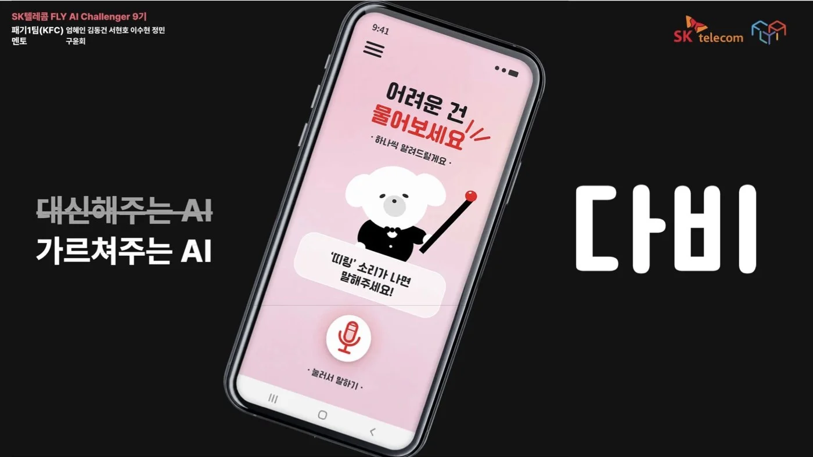

02 · PRODUCT · LLM EVALUATION
다비
시니어가 말로 원하는 일을 말하면 다른 앱 화면 위에 “여기를 누르세요”를 띄워 가르치는 Android 앱. 기술을 잘 만드는 것보다, 사람이 안심하고 사용할 수 있는 방식을 먼저 고민했습니다.
95.5 → 100%운영 프롬프트 목표 도달률 (픽스처 22개)
- Role
- 프론트엔드 구현 · LLM 실험 및 평가 · 사용자에게 전달되는 안내 경험 설계
- Team
- SKT FLY AI 9기 · 5인 · 2026.06–09 · 최우수상
- Result
- 잘못된 최적화 2건 기각 · 평가 집계 72 → 100%